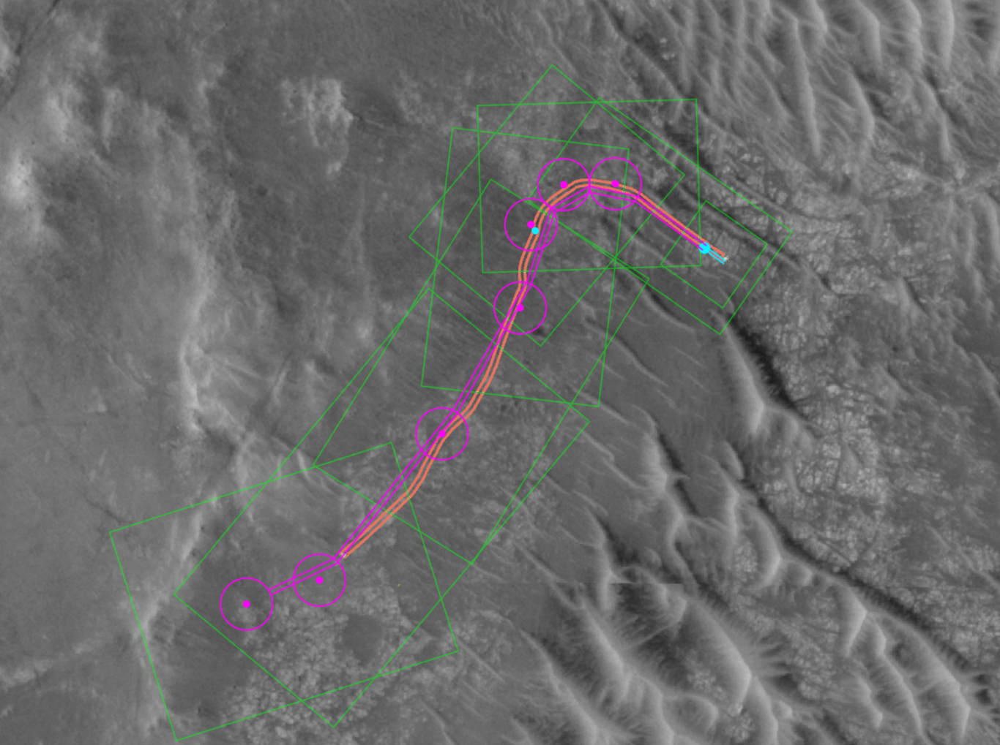
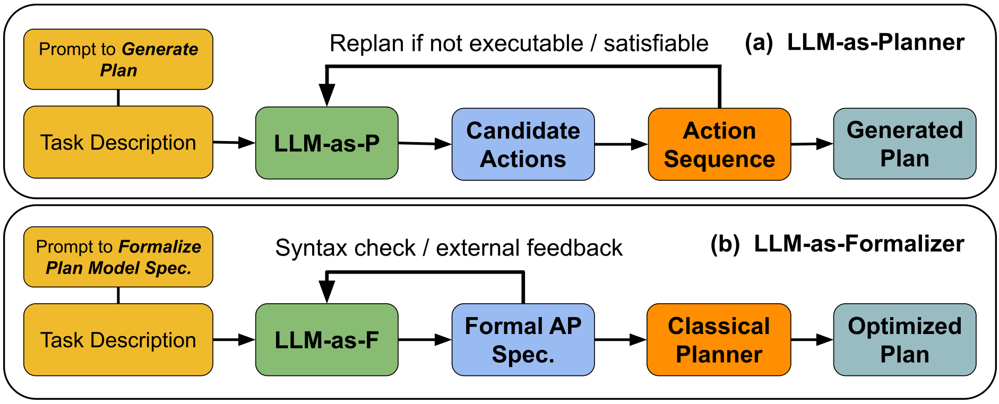

Qué muestra la evidencia y cómo usarlos sin perder las garantías
Sistemas Inteligentes · Especialización en Inteligencia Artificial · UNAL Manizales · 20 min
Clave de Mystery
«Attack object a» = tomar A de la mesa
«a craves b» = A está sobre B
«Harmony» = la mano está libre
o1-preview, septiembre de 2024 · sin ejemplos
97,8 % Blocksworld
52,8 % Mystery
Ningún LLM anterior superó el 5 % en Mystery. Fast Downward: 100 % en 0,27 s.
de acierto en problemas de 6 a 20 bloques (planes de 20 a 40 pasos)
de los problemas imposibles recibieron un plan falso; solo 27 % fueron reconocidos
por cada 100 problemas con o1-preview; GPT-4o, US$0,65; Fast Downward, casi nada
Tareas resueltas de 360 (8 dominios de la IPC 2023). Redibujado de Corrêa, Pereira y Seipp (2026), Tablas 1 y 2, arXiv:2511.09378v2.
Los modelos recientes resuelven muchas más tareas, y algunos compiten con planificadores clásicos
No hay garantía de validez; caen con nombres ofuscados y con planes largos; cuestan mucho más; los estudios solo cuentan los planes que pasan VAL
Plan propuesto por el LLM · versión 1
Plan corregido por el LLM · versión 2


Orden de trabajo
«La bomba 3 de la Planta Norte tiene fuga en el sello. Ana está certificada. Hay un sello en la bodega. Debe quedar en servicio.»
(:init (averiado bomba3) (certificado ana bomba3) (almacenado sello bodega) …) (:goal (en-servicio bomba3))
El LLM tradujo «reparar» y omitió una línea
:precondition (and (en ?t ?l) (ubicado ?e ?l) ; falta (bloqueado ?e) (averiado ?e) (lleva ?t ?r) …)
Fast Downward propone
✓ válido para el modelo traducido
✗ inválido para el modelo correcto: repara la bomba encendida
El validador verifica contra el modelo: si el modelo está mal, verifica lo incorrecto. El modelo traducido también se revisa.
mejoran, pero no garantizan planes válidos
el LLM propone; el validador certifica
útil, pero el modelo también se revisa
viene del verificador y del modelo, no del LLM
trabajo_independiente.mdSobre las instancias del Laboratorio 2A se comparan tres estrategias: el LLM planifica directamente; el LLM traduce a PDDL y resuelve el planificador; y un ciclo generar-verificar en el que el validador devuelve los errores al LLM. Se miden validez, iteraciones y costo.
Notebook autocontenido en VS Code: toda la explicación está dentro del ejercicio.
.png){kind=link}